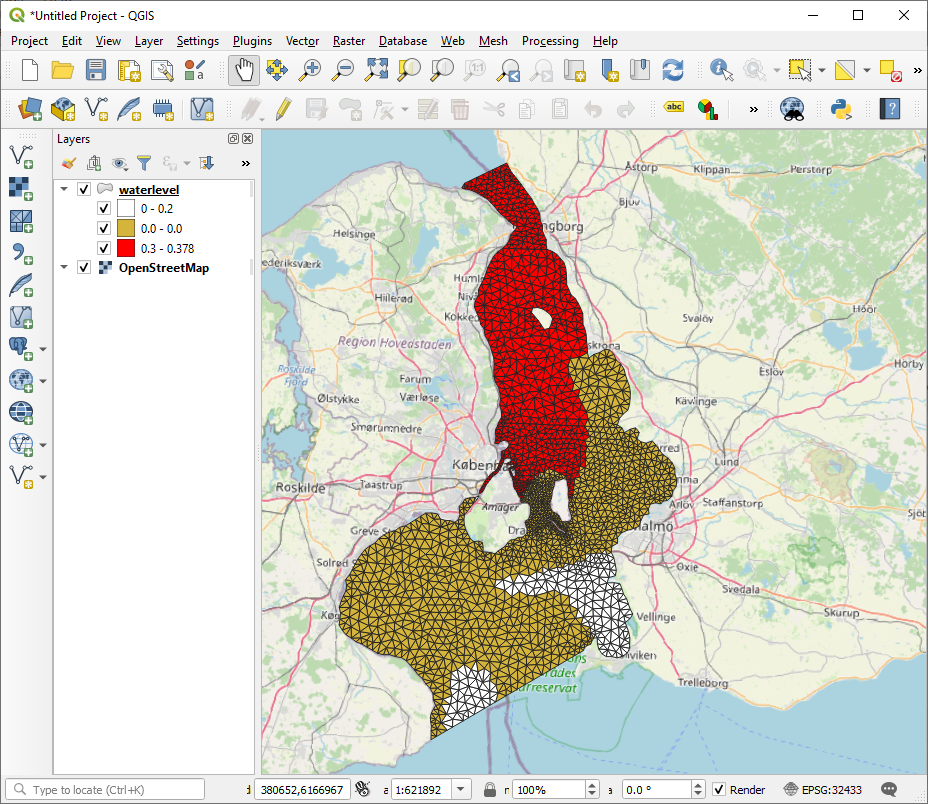

Export to file¶
[in development]
Exporting to GIS formats such as ESRI Shapefile or GeoTiff requires some libraries which are tricky to install on Windows.
One way is to use Conda-forge
Download the Miniconda installer
Install GeoPandas:
conda install --channel conda-forge geopandas
Export to shapefile¶
This section requires the geopandas package
from mikeio import Dfsu
import geopandas as gpd
---------------------------------------------------------------------------
ModuleNotFoundError Traceback (most recent call last)
/tmp/ipykernel_2012/3841419929.py in <module>
----> 1 import geopandas as gpd
ModuleNotFoundError: No module named 'geopandas'
dfs = Dfsu("data/oresundHD_run1.dfsu")
dfs
Dfsu2D
Number of elements: 3612
Number of nodes: 2046
Projection: UTM-33
Items:
0: Surface elevation <Surface Elevation> (meter)
1: Total water depth <Water Depth> (meter)
2: U velocity <u velocity component> (meter per sec)
3: V velocity <v velocity component> (meter per sec)
Time: 5 steps with dt=86400.0s
2018-03-07 00:00:00 -- 2018-03-11 00:00:00
ds = dfs.read(items="Surface elevation")
ds
<mikeio.Dataset>
Dimensions: (5, 3612)
Time: 2018-03-07 00:00:00 - 2018-03-11 00:00:00
Items:
0: Surface elevation <Surface Elevation> (meter)
maxwl = ds.max(axis=0)["Surface elevation"][0]
maxwl.shape
(3612,)
shp = dfs.to_shapely()
type(shp)
shapely.geometry.multipolygon.MultiPolygon
poly_list = [p for p in shp]
gdf = gpd.GeoDataFrame({'waterlevel': maxwl},geometry=poly_list, crs=dfs.projection_string)
---------------------------------------------------------------------------
NameError Traceback (most recent call last)
/tmp/ipykernel_2012/1350686416.py in <module>
----> 1 gdf = gpd.GeoDataFrame({'waterlevel': maxwl},geometry=poly_list, crs=dfs.projection_string)
NameError: name 'gpd' is not defined
Ouch… The short and smart projection string “UTM-33” is apparently not understood by GeoPandas. Better look it up on the web https://spatialreference.org/ref/epsg/32433/
gdf = gpd.GeoDataFrame({'waterlevel': maxwl},geometry=poly_list, crs="EPSG:32433")
---------------------------------------------------------------------------
NameError Traceback (most recent call last)
/tmp/ipykernel_2012/1393587041.py in <module>
----> 1 gdf = gpd.GeoDataFrame({'waterlevel': maxwl},geometry=poly_list, crs="EPSG:32433")
NameError: name 'gpd' is not defined
gdf.head()
---------------------------------------------------------------------------
NameError Traceback (most recent call last)
/tmp/ipykernel_2012/999814630.py in <module>
----> 1 gdf.head()
NameError: name 'gdf' is not defined
Export as ESRI Shapefile
gdf.to_file("waterlevel_utm.shp")
---------------------------------------------------------------------------
NameError Traceback (most recent call last)
/tmp/ipykernel_2012/2946999712.py in <module>
----> 1 gdf.to_file("waterlevel_utm.shp")
NameError: name 'gdf' is not defined
Which can be used together with other data sources and customized in QGIS 
Or GeoJSON, which some might prefer…
gdf.to_file("waterlevel_utm.json")
---------------------------------------------------------------------------
NameError Traceback (most recent call last)
/tmp/ipykernel_2012/362806699.py in <module>
----> 1 gdf.to_file("waterlevel_utm.json")
NameError: name 'gdf' is not defined